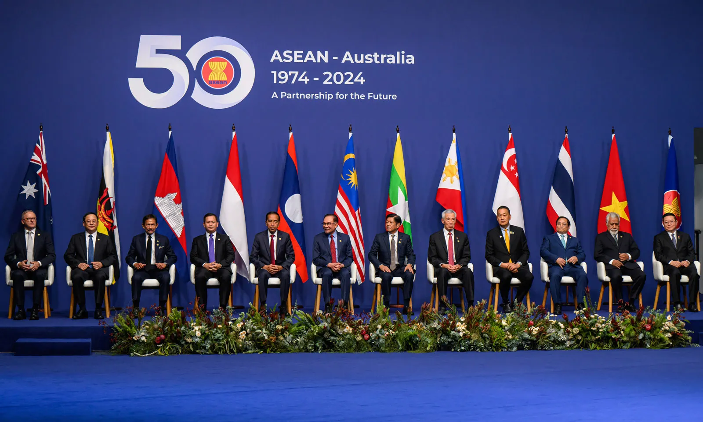

Kerja sama Regional
Kerja sama regional adalah bentuk kerja sama yang dilakukan oleh dua negara atau lebih dalam satu kawasan geografis tertentu untuk mencapai tujuan bersama dan memperoleh manfaat di berbagai bidang.
ASEAN
ASEAN (Association of Southeast Asian Nations) merupakan organisasi regional di kawasan Asia Tenggara yang menjadi wadah kerja sama antarnegara anggotanya. Terdapat 11 negara anggota yaitu Indonesia, Malaysia, Singapura, Thailand, Filipina, Brunei Darussalam, Vietnam, Laos, Myanmar, Kamboja, dan Timor Leste. Salah satu bidang kerja samanya adalah pendidikan, seperti meningkatkan akses pendidikan, kualitas pembelajaran, serta pemerataan kesempatan belajar bagi masyarakat di negara-negara ASEAN. Salah satu program kerja sama pada ASEAN adalah ASEAN University Network yang berperan dalam pertukaran pelajar dan mahasiswa, serta ASEAN Council of Teacher berperan dalam pengembangan guru dan tenaga kependidikan.

Indonesia berperan aktif dalam kerja sama pendidikan ASEAN dengan mengikuti pertemuan para Menteri Pendidikan ASEAN, berbagi pengetahuan dan pengalaman mengenai sistem pendidikan di Indonesia, serta mendukung program pertukaran pelajar dan pemberian beasiswa. Melalui peran tersebut, Indonesia dapat ikut meningkatkan kualitas dan pemerataan pendidikan di kawasan Asia Tenggara.
Dengan adanya kerja sama ASEAN, ini dapat membantu meningkatkan kualitas pembelajaran dan memperluas kesempatan belajar pada anak di Asia Tenggara. Melalui pertukaran pelajar dan pelatihan guru, negara dapat saling membantu mengatasi keterbatasan pendidikan. Tidak hanya itu, kerja sama ini dapat membantu mengurangi kesenjangan pendidikan sehingga setiap anak memiliki kesempatan belajar yang sama dan pendidikan yang berkualitas tanpa melihat ekonomi mereka.